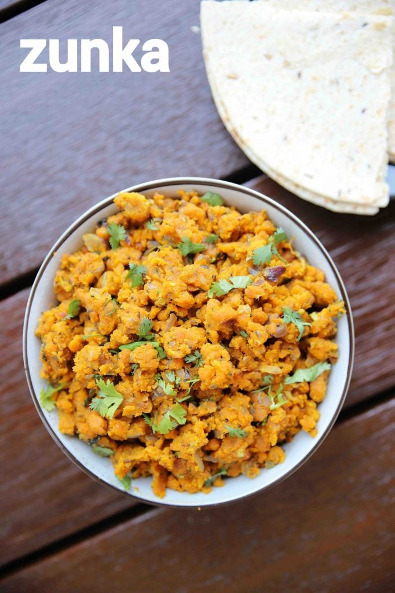

Home
Zunka

Description
A traditional maharashtrian dry sabzi or gravy made with besan or chickpea flour. it is a spicy besan curry which is typically prepared as a side dish for bhakri but can also be served with chapati. it can be made with dry and semi gravy version and this recipe post dedicate to the dry version of besan pithla recipe.
Ingredients
- 2 tbsp oil
- 1 tsp mustard
- 1 tsp cumin / jeera
- pinch hing / asafoetida
- 4 clove garlic, finely chopped
- 1 chilli, finely chopped
- 1 onion, finely chopped
- ¼ tsp turmeric
- 1 tsp kashmiri red chilli powder
- 1 tsp salt
- 1 cup besan / gram flour
- water as required
- 2 tbsp coriander, finely chopped
Steps
- Firstly, in a large kadai heat 2 tbsp oil and splutter 1 tsp mustard, 1 tsp cumin and pinch hing.
- Also add 4 clove garlic, 1 chilli and saute well.
- Now add 1 onion and saute until the change colour slightly.
- Further add ¼ tsp turmeric, 1 tsp chilli powder and 1 tsp salt.
- Saute slightly, without burning the spices.
- Now add 1 cup besan and saute on low flame.
- Saute for 5 minutes, or until the besan turns golden and aromatic.
- Further, sprinkle ¼ cup water and mix well.
- Keep sprinkling water in batches until the mixture turns moist.
- I have sprinkled almost 1 cup water in batches.
- Cover and simmer for 10 minutes, or until the besan is cooked completely.
- Give a good mix making sure there are no lumps.
- Finally, add in coriander leaves and enjoy zunka with bhakri.